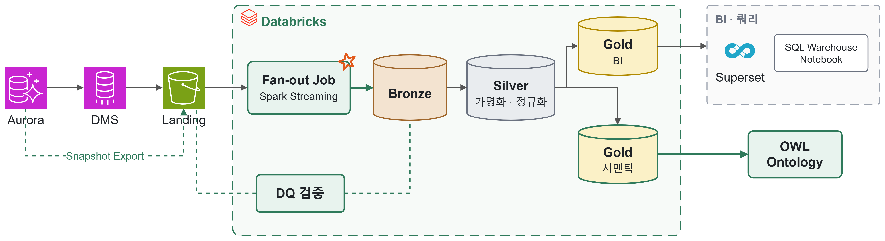
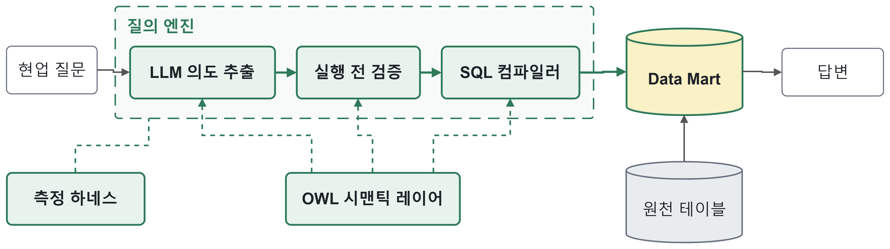
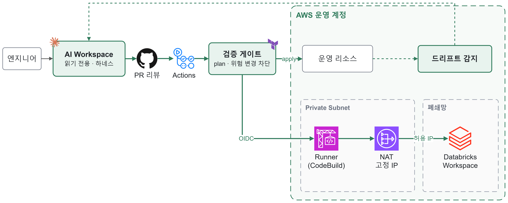
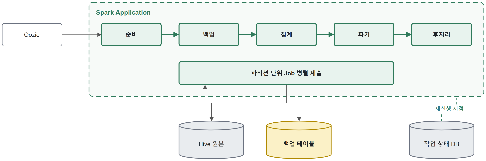
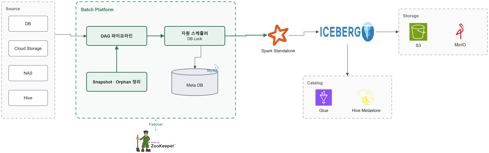

← Daehong's Blog
이력서
경력기술서
사이드 프로젝트
PDF 다운로드
Redshift → Databricks 메달리온 레이크하우스 전환
CDC 기반 준실시간 레이크하우스 구축 · 운영 PFCT · 2026.02 - 현재

1. 배경 및 목표
운영 DB를 DMS로 Redshift에 직접 복제하는 구조로, 적재 작업이 Redshift 실행 시간의 58% ~ 최대 99.8%를 차지해 조회 성능 저하. 적재 · 조회 컴퓨트 분리 필요
데이터를 다시 만들려면 운영 DB를 재조회해야 하고, 변경 이력 · 삭제 기록이 남지 않으며 Redshift VARCHAR 한도(64KB)를 넘는 값은 잘려 원본 보존 불가
약 1,600개 테이블을 실제 조회 패턴에 맞는 주기로 적재하되, 일 DBU 비용 상한 안에서 운영
2. 기술 스택 및 환경
Python, Spark, Databricks, Delta Lake, AWS DMS, S3, Aurora MySQL, Redshift, Airflow
DMS CDC 태스크 30개 이상의 AWS 클라우드 환경
약 1,600개 테이블, 수십TB 규모 데이터
3. 주요 업무 및 상세 역할
Tech Proposal 작성 → PoC → 설계 및 구축까지 주도
메달리온 계층별 S3 버킷 · Unity Catalog 구조와 권한 · 라이프사이클 정책 설계
Aurora 스냅샷 S3 Export 기반 초기 풀로드 설계 · 수행
DMS CDC → S3 Landing → Delta Lake Bronze 준실시간 적재 아키텍처 설계 · 개발
Fan-out 스트리밍 Job 설계 및 MERGE 성능 최적화
Landing ↔ Bronze 전수 정합성 검증(DQ) 체계 구현
4. 비즈니스 가치 및 기술적 성과
메달리온 계층별 S3 버킷 · Unity Catalog 구조를 설계하고 권한 · 라이프사이클 정책으로 접근 통제 · 스토리지 관리 기준 확립
Read Replica 풀로드의 성능 저하 · 장시간 적재를 Aurora 스냅샷 S3 Export로 바꿔, 운영 DB 부하 없이 수십TB 초기 적재
준실시간이 필요한 약 200개 테이블 은 CDC 경로로 E2E Latency p99 30초 이내 적재, 나머지는 배치 레이어로 분리
테이블별 스트림 구조(DLT)를 스키마당 스트림 하나가 테이블별로 분배 · MERGE하는 Fan-out Job으로 재설계하여, CPU 75% · 메모리 66% · Compute 비용 39% 절감
Execution Plan 분석으로 NULL 허용 머지 키(<=>)가 Data Skipping을 막아 전체 스캔하는 원인을 찾고, 키 범위 조건 추가와 <=> 제한 적용으로 Merge 시간 73% 단축
약 1,600개 테이블 전수 정합성 검증(DQ)을 자동화하여 적재 누락 31만 건 · CDC 순서 오류 15만 건 을 탐지하고, 멱등한 조건부 MERGE로 복구하여 최종 누락 0건 달성
Redshift 감사 로그 · Airflow DAG 전수 분석으로 테이블을 실시간 · 6시간 · 일 배치로 등급화, 등급별 Job 클러스터 최적화로 일 DBU $100 이내 달성
데이터 분석 전용 온톨로지 · 시맨틱 레이어 구축
분석용 Data Mart 및 지표 표준화 질의 엔진 개발 PFCT · 2026.03 - 2026.11

1. 배경 및 목표
데이터 분석가들이 의미가 겹치는 테이블과 중복 컬럼 때문에 어떤 테이블을 써야 할지 판단하기 어려워, 분석용 데이터 정리와 질의 체계 개선을 요청
사내 공용 에이전트의 분석용 온톨로지가 원천 테이블을 그대로 매핑해, 같은 질문에도 다른 답 발생(정답률 17%, 일관성 30%)
금융 데이터 특성상 정확성 · 일관성이 필수이며, 흩어진 지표 정의를 한 곳으로 모을 필요가 있음
2. 기술 스택 및 환경
Python, SQL, OWL/RDF(Turtle), Redshift, LLM(Claude), AWS EKS, ECR, S3
사내 DW의 대출 · 투자 · 신용 도메인 테이블 환경
3. 주요 업무 및 상세 역할
Redshift 대출 도메인 테이블 약 250개의 중복 · 구조 분석 및 분석용 Data Mart 설계 · 구축
OWL 기반 데이터 · 지표 정의 계층 설계
LLM 질의 의도 추출 · 실행 전 검증 · SQL 컴파일러 구조의 질의 엔진 설계 · 개발
정답지 기반 정확도 · 일관성 측정 하네스 및 테스트 체계 개발
4. 비즈니스 가치 및 기술적 성과
Redshift에 파편화된 약 250개 대출 도메인 테이블 의 중복 테이블 · 컬럼과 구조를 분석하고, 업무 흐름 기준으로 통합 · 재구성해 기준 테이블이 하나인 분석용 Data Mart 구축
단계별 출력을 비교하는 측정 하네스로 불일치 원인을 분리하고, LLM은 질의 의도만 구조화해 추출하고 코드가 SQL을 생성하는 구조로 재설계
현업 질문 61문항 × 20회 반복 테스트에서 기존 대비 정답률 17% → 98% , 동일 질문 응답 일관성 30% → 98% 개선
동일 테스트 기준 응답 시간 91% 단축 (416분 → 38분), LLM 토큰 사용량 87% 절감 (134.8M → 17.2M)
AWS 인프라 IaC 전환 및 AI Workspace 기반 운영 체계 구축
Terraform 전환 · 폐쇄망 Databricks 통합 관리 PFCT · 2026.07 - 2026.10

1. 배경 및 목표
데이터 AWS 계정의 리소스 1,700개 이상이 모두 콘솔로 만들어져, 변경 이력을 추적하거나 재현할 수 없고 운영 리소스가 의도치 않게 삭제 · 변경될 위험 상존
사람마다 작업 방식이 달라 같은 작업도 결과가 달라지고, 누가 무엇을 바꿨는지 남지 않음
망분리된 폐쇄망 환경의 Databricks Workspace까지 같은 방식으로 관리할 수 있는 체계 필요
2. 기술 스택 및 환경
Terraform, AWS(VPC, NAT Gateway, CodeBuild, EKS, Aurora, DMS, S3, IAM), Databricks, GitHub Actions(OIDC), Claude Code
단일 운영 계정 리소스 1,700개 이상, 망분리 Databricks Workspace 환경
3. 주요 업무 및 상세 역할
IaC 전환 필요성 건의 → Tech Proposal 작성 → PoC → 설계 및 구축까지 주도
전체 리소스 인벤토리 조사 및 네트워크 · 보안 · 데이터 스토어 · 컴퓨트 · 관측성 5개 레이어 Terraform import
팀 공용 AI Workspace와 하네스(읽기 전용 스킬, 의도 선언, CI 전용 적용) 설계 · 구현
AWS 실제 상태 대조 검증 게이트 및 드리프트 감지 체계 개발
VPC 내부 CodeBuild Runner 기반 폐쇄망 Databricks Terraform 적용 파이프라인 구성
4. 비즈니스 가치 및 기술적 성과
콘솔로 관리하던 AWS 리소스 약 1,200개를 Terraform IaC로 전환 하고, 상태 일치 검증(plan 변경 0건 · CloudTrail 쓰기 API 0회)으로 무중단 이관
LLM 기반 Terraform 코드 생성 · 동기화 절차를 팀 공용 AI Workspace 로 표준화해, 데이터 팀 누가 작업해도 같은 결과가 나오고 모든 변경 이력이 남는 IaC 운영 체계 구축
AI 에이전트는 읽기 전용, 적용은 PR 리뷰를 통과한 CI만 가능하게 하고, 삭제 · 교체가 생기는 변경은 의도 선언 없이는 차단해 운영 리소스 사고 위험을 구조적으로 제거
AWS 실제 상태를 정답지로 대조하는 검증 게이트와 드리프트 감지로 콘솔 변경을 자동 탐지하고 약 5분 내 코드로 재동기화
Terraform 코드 재생성 결과의 비결정적 순서 문제를 해결해 변경 리뷰 범위 11만 줄 → 100줄 로 축소
GitHub Actions가 OIDC로 VPC 내부 CodeBuild Runner를 실행해 망 안에서 plan · apply하고, 외부 통신은 NAT Gateway로만 나가게 해 망분리를 유지한 채 폐쇄망 Databricks까지 IaC로 통합 관리
Hadoop Ecosystem 기반 플랫폼 성능 최적화 및 고도화
NH 금융 빅데이터 개인신용정보 파기 프로세스 성능 개선 (주)디딤365 · 2025.04 - 2025.08

1. 배경 및 목표
매년 데이터가 꾸준히 늘면서 기존 Hive 기반 데이터 처리 애플리케이션의 성능 저하. 개선 필요
금융감독원 제출용 데이터 처리 시간이 매년 늘어 제출 기한을 맞추기 어려워졌고, 장시간 작업이 중간에 실패하면 실패 지점부터 재처리하기 어려운 구조
장시간 실행되는 Spark 작업에서 Kerberos Ticket 만료로 발생하는 HDFS 인증 오류를 방지하고, 작업 연속성과 안정성 확보
운영 중 발생하는 플랫폼(애플리케이션)의 주요 이슈 해결
2. 기술 스택 및 환경
Java, Scala, Spring Boot, Spark, Hadoop, YARN, Hive, Zookeeper, Oozie, MySQL, Impala, Hue
30대 이상 규모의 Hadoop 클러스터 환경
테이블당 수십TB ~ 수백TB 이상의 데이터 환경
3. 주요 업무 및 상세 역할
성능 향상을 위한 프로세스 재설계, Spark · Hive 데이터 처리 애플리케이션 개발
데이터 처리 프로세스 리팩토링을 통해 집계 로직을 자동화하여 운영 효율성 향상
수백TB의 데이터를 활용하여 성능 및 안정성 검증
Kerberos Keytab 기반 인증 갱신 체계를 적용하여 장시간 실행되는 Spark 작업의 Ticket 만료로 인한 인증 오류 방지
TCP Leak, Memory OOM 등 운영 환경에서 발생하는 플랫폼(애플리케이션)의 주요 이슈 해결
4. 비즈니스 가치 및 기술적 성과
하나의 Spark 애플리케이션 안에서 파티션 단위 Job을 멀티 스레드로 동시 제출해 유휴 Executor 슬롯을 채우고, Spark UI로 Task 분포 · GC를 검증하여 약 1,100개 파기 작업의 CPU 코어 사용률 20~30% → 80%, 처리 시간 70% 단축
한 번에 돌던 백업 · 파기 작업을 단계별로 나누고, 실패하면 실패한 파티션부터 재실행 하도록 개선. 같은 파티션을 다시 돌려도 결과가 같도록 덮어쓰기(INSERT OVERWRITE) 방식으로 설계
파기 건수를 집계하려고 매번 4억 행 백업 테이블을 Join하고 사람이 다시 집계하던 과정을, 백업 시점에 파기 대상을 미리 표시하는 방식으로 바꿔 전체 워크플로우 시간 80% 단축 및 금융감독원 제출 집계 자동화
Hive 통계가 없어 작은 기준 테이블도 큰 테이블로 판단되어 Sort-Merge Join으로 처리되던 것을 Broadcast Join으로 바로잡아, 같은 자원에서 처리량 20% 향상
Spark 쓰기 시 셔플 파티션 수만큼 파일이 쪼개져 쌓이던 Small File 문제를 데이터 크기에 맞춘 coalesce로 병합해, NameNode 메타데이터 · 후속 조회 부하 감소
플랫폼 모듈 애플리케이션(Spring Boot)의 JVM Heap Dump 분석으로 Bean Lifecycle · Task 객체(Map)의 메모리 누수를, 예외 처리의 finally 누락으로 생긴 TCP Connection 누수를 찾아 제거하여 월 장애 시간 90% 이상 감소, 가용성 99.9% SLA 충족
프로젝트 성과로 고객사에 기술 역량을 인정받아 후속 프로젝트 계약 유치 , 수억 원 규모 매출에 기여
Spark · Iceberg 기반 대규모 데이터 파이프라인 플랫폼 설계 · 개발
Didim-DP Batch Cloud Solution 개발 (주)디딤365 · 2024.07 - 2025.03

1. 배경 및 목표
클라우드를 점점 선호해가는 고객사 환경에 맞추기 위해, 기존 Hadoop 에코시스템에 종속된 아키텍처에서 벗어나 유연하게 동작하는 데이터 처리 플랫폼 필요
DB, Cloud Storage, NAS, Hive 등 다양한 엔드포인트에서 데이터를 효율적으로 추출 · 적재하는 구조 설계 및 구현
고정된 수집-변환-적재(ETL) 구조에서 벗어나, DAG 기반 파이프라인으로 분기 · 이벤트 · 병렬 · 조건별 처리 등 다양한 데이터 흐름 지원
2. 기술 스택 및 환경
Java, Scala, Spring Boot, Spark, Iceberg, DuckDB, Zookeeper, MinIO, AWS S3, AWS Aurora, Hive, MySQL, Oracle, GitLab Runner
온프레미스 서버 7대 환경
일 평균 25억 건 데이터 처리 환경
3. 주요 업무 및 상세 역할
신규 플랫폼 필요성 직접 건의 → 아키텍처 설계 · 개발까지 주도
Spark · Iceberg 기반 분산 데이터 처리 체계 및 플랫폼 아키텍처 설계 · 개발
Module H/A 구성 및 Failover 체계 설계 · 구현
Iceberg Expired Snapshot · Orphan File 관리 체계 구현
Spark Standalone용 DB Lock 기반 자원 스케줄러 개발
4. 비즈니스 가치 및 기술적 성과
Spark · Iceberg 기반 데이터 처리 체계를 신규 아키텍처로 설계 · 구현하여, 기존 Hadoop 기반 ETL 대비 처리 시간 40% 단축 및 HDFS 종속성 제거로 S3 · Glue 등 클라우드 확장성 확보
Module H/A 구성 및 Failover 체계 구현으로 장애 시 대기 노드로 자동 전환되도록 하여 장애 자동 복구율 95% 이상 달성
고정된 ETL 대신 DAG 기반 파이프라인으로 분기 · 이벤트 · 병렬 · 조건별 처리를 지원해, 고객사마다 다른 데이터 흐름을 별도 개발 없이 하나의 플랫폼에서 구성
Iceberg Expired Snapshot 및 Orphan File 관리를 자동화하여 스토리지 사용량 30% 이상 절감 , 장기 운영 시 메타데이터 누적으로 인한 성능 저하 예방
Spark Standalone에 DB Lock 기반 자원 스케줄러를 구축해 Core · Memory 할당량과 SLA Queue별 작업 제출을 제어하고, Driver 병목에 따른 데드락을 방지해 일 평균 800개 이상 배치 작업 안정 처리
일 평균 25억 건 이상의 대용량 데이터 처리 환경에서 성능 · 안정성을 검증하고, 금융권 고객사 프로젝트에 납품 · 운영